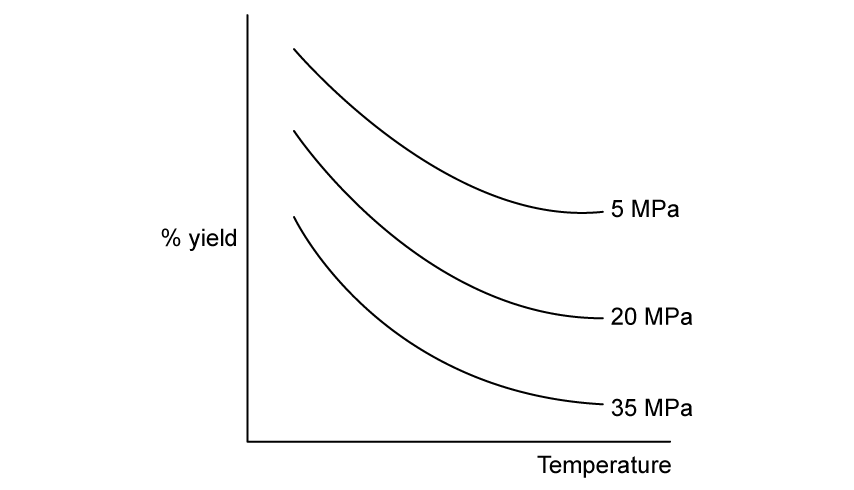
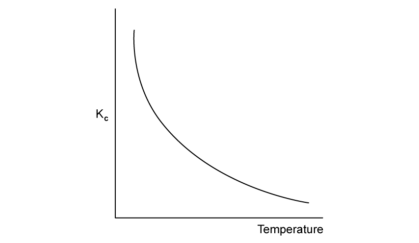
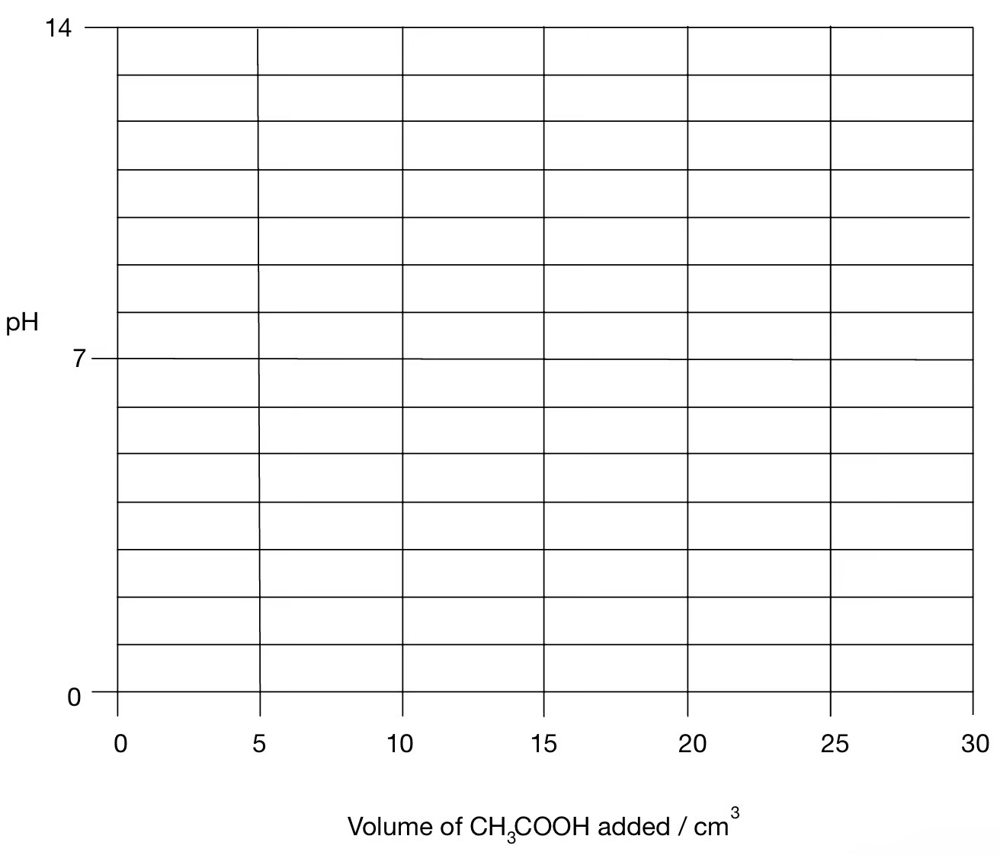

7 Equilibria
Dynamic equilibrium, Le Chatelier’s principle, Kc, Kp and acid–base equilibria
7 Equilibria
本章对应 CIE 9701 AS Chemistry 的 Equilibria，重点是判断动态平衡的变化、书写并计算 Kc/Kp，以及分析工业平衡和酸碱滴定。
Learning objectives
学完本章后，你应该能够：
- define dynamic equilibrium in a closed system;
- use Le Chatelier’s principle to predict changes in yield and composition;
- write Kc and Kp expressions, including correct powers and units;
- calculate equilibrium concentrations, partial pressures and equilibrium constants;
- explain compromise conditions in the Haber, Contact and ethanol processes;
- distinguish strong and weak acids/bases and select indicators for titrations.
7.1 Dynamic equilibrium
What dynamic equilibrium means
A dynamic equilibrium is established in a closed system when the forward and reverse reactions continue at equal rates. The concentrations of reactants and products then remain constant, although they do not have to be equal.
The reversible arrow, \(\ce{<=>}\), shows that both directions are possible. Equilibrium is dynamic rather than static: particles continue to react in both directions.
For example:
\[\ce{N2O4(g) <=> 2NO2(g)}\]
At equilibrium, the rate of decomposition of N2O4 equals the rate of formation of N2O4. A pressure change can alter the composition because the two sides contain different numbers of gas molecules.
Do not confuse three statements: at equilibrium the rates are equal; concentrations are constant; concentrations are not necessarily equal. A closed system is essential because a gas escaping or a reactant being continually removed prevents the reverse reaction from balancing the forward reaction.
7.2 Le Chatelier’s principle
If a system at equilibrium is disturbed, the position of equilibrium shifts to oppose the change.
Temperature
Treat heat as a reactant in an endothermic direction and as a product in an exothermic direction.
- Increasing temperature favours the endothermic direction.
- Decreasing temperature favours the exothermic direction.
- Only temperature changes the value of Kc or Kp.
Pressure and volume
For gaseous equilibria, increasing pressure favours the side with fewer moles of gas. Decreasing pressure favours the side with more moles of gas. If both sides have the same total number of gas moles, pressure has no effect on the equilibrium composition.
At constant pressure, heating a gas mixture also causes thermal expansion. This volume change must be considered separately from the equilibrium shift.
Concentration and catalysts
Adding a reactant shifts equilibrium towards products; removing a product also shifts equilibrium towards products. A catalyst lowers the activation energy of both directions by a similar amount. It reaches equilibrium faster but does not change the equilibrium position, yield or K value.
For gases, an inert gas has no effect on the equilibrium composition at constant volume because the partial pressures of reacting gases do not change. At constant total pressure, adding inert gas increases volume and can favour the side with more gas molecules. State the condition before giving the conclusion.
7.3 Equilibrium constants
For a general reaction:
\[\ce{aA + bB <=> cC + dD}\]
the concentration equilibrium constant is:
\[K_c=\frac{[\ce{C}]^c[\ce{D}]^d}{[\ce{A}]^a[\ce{B}]^b}\]
The powers are the stoichiometric coefficients. Pure solids and pure liquids are omitted because their effective concentrations are constant. For gaseous equilibria using partial pressures:
\[K_p=\frac{p(\ce{C})^c p(\ce{D})^d}{p(\ce{A})^a p(\ce{B})^b}\]
The numerical value and units of K depend on the balanced equation and the temperature. A large K indicates that products are favoured at equilibrium; a small K indicates that reactants are favoured. K alone does not describe the rate of a reaction.
When writing an expression, use equilibrium concentrations or partial pressures only; do not use initial concentrations. Include coefficients as powers, omit pure solids and liquids, and do not invert the expression. Units are found by collecting the concentration or pressure powers after the expression is written.
For gas mixtures, calculate a partial pressure using partial pressure = mole fraction × total pressure. The sum of all partial pressures must equal the total pressure.
Worked example - Haber process
Calculating Kc
For:
\[\ce{N2(g) + 3H2(g) <=> 2NH3(g)}\]
if \([\ce{N2}]=1.80\), \([\ce{H2}]=3.66\) and \([\ce{NH3}]=1.12\ \mathrm{mol\ dm^{-3}}\):
\[K_c=\frac{1.12^2}{1.80\times3.66^3}=0.0512\ \mathrm{dm^6\ mol^{-2}}\]
The total concentration power in the numerator is 2 and in the denominator is 4, so the units are \(\mathrm{dm^6\ mol^{-2}}\).
7.4 Industrial equilibria
Haber process
\[\ce{N2(g) + 3H2(g) <=> 2NH3(g)}\qquad \Delta H<0\]
High pressure favours ammonia because there are four gas moles on the left and two on the right. Low temperature favours yield because the forward reaction is exothermic, but the rate would be too slow. Industry uses a compromise temperature, high pressure, an iron catalyst, cooling/condensation of ammonia and recycling of unreacted gases.
Contact process
The key equilibrium is:
\[\ce{2SO2(g) + O2(g) <=> 2SO3(g)}\qquad \Delta H<0\]
High pressure favours SO3, but the pressure gain is limited by cost. A compromise temperature gives an acceptable rate and yield. Vanadium(V) oxide is used as a catalyst. The SO3 is absorbed in concentrated sulfuric acid rather than directly in water.
Ethanol and ester manufacture
For:
\[\ce{C2H4(g) + H2O(g) <=> C2H5OH(g)}\qquad \Delta H<0\]
high pressure and lower temperature favour ethanol, but a catalyst and a compromise temperature are needed for a practical rate. Esterification reactions are reversible liquid equilibria, so changing pressure has little effect; removing an ester or water can increase conversion.
7.5 Acids, bases and titrations
In the Brønsted–Lowry model, an acid donates a proton and a base accepts a proton. A strong acid or base is almost completely dissociated in water; a weak acid or base is only partially dissociated. Weak does not mean dilute.
Every proton-transfer reaction contains two conjugate acid-base pairs. When an acid donates H+, it becomes its conjugate base; when a base accepts H+, it becomes its conjugate acid. Water is amphoteric: it can donate a proton to a base or accept a proton from an acid.

For a weak acid:
\[\ce{HA(aq) <=> H+(aq) + A-(aq)}\]
the position of equilibrium lies mainly to the left. In a titration, the indicator transition range must lie within the steep vertical part of the pH curve near the equivalence point. A strong acid–weak base equivalence point is below pH 7, while a weak acid–strong base equivalence point is above pH 7.
For a strong acid, use [H+] from the stated concentration after allowing for the number of protons released. For a strong base, obtain [OH−] first, then use pH + pOH = 14 at 25 °C. In an acid-base titration, write the balanced equation before using n = cV; convert cm3 to dm3.
Worked example - partial pressures
If the total pressure is 3.0 atm and the equilibrium partial pressures of A and B are both 0.50 atm, then:
\[p(\ce{C})=3.0-0.50-0.50=2.0\ \mathrm{atm}\]
Always use the sum of all partial pressures to check the total pressure.
Chapter checklist
Multiple choice questions
7 Equilibria - Multiple Choice: Easy
Question 1 · Pressure and temperature · 1.7 Choice Easy Q1
For the equilibrium reaction \[\ce{N2O4(g) <=> 2NO2(g)}\] which conditions give the greatest equilibrium yield of nitrogen dioxide?
Show explanation
B. The forward reaction is endothermic and produces more gas moles, so high temperature and low pressure favour NO2.
Question 2 · Contact process · 1.7 Choice Easy Q2
In the Contact process, \[\ce{2SO2(g) + O2(g) <=> 2SO3(g)}\qquad \Delta H=-197\ \mathrm{kJ\ mol^{-1}}\] Which statement is correct?
Show explanation
B. The forward reaction is exothermic, so increasing temperature shifts equilibrium to the left. The industrial catalyst is vanadium(V) oxide and does not change the equilibrium position.
Question 3 · Dynamic equilibrium · 1.7 Choice Easy Q3
Which statement describes a dynamic equilibrium?
Show explanation
C. Both reactions continue, but at equal rates; the concentrations therefore remain constant.
Question 4 · Partial pressures · 1.7 Choice Easy Q4
For \[\ce{A(g) + B(g) <=> 2C(g)}\] the total pressure is 3.0 atm. If the partial pressure of A is 0.50 atm and A and B have equal partial pressures, what is the partial pressure of C?
Show explanation
D. The partial pressures of A and B total 1.0 atm, so C contributes 3.0−1.0=2.0 atm.
Question 5 · Haber process equipment · 1.7 Choice Easy Q5
What is the purpose of the heat exchanger in the Haber process?
Show explanation
C. Hot products transfer heat to the incoming gases, then ammonia is cooled and separated while unreacted nitrogen and hydrogen are recycled.
Question 6 · Ethanol manufacture · 1.7 Choice Easy Q6
Ethanol is manufactured by reacting steam with ethene:
\[\ce{C2H4(g) + H2O(g) <=> C2H5OH(g)}\qquad \Delta H=-45\ \mathrm{kJ\ mol^{-1}}\]
Which changes would increase the equilibrium yield of ethanol?
- Adding a catalyst.
- Increasing the pressure.
- Decreasing the temperature.
Show explanation
C. The product side has fewer gas molecules and the forward reaction is exothermic. A catalyst changes rate, not equilibrium yield.
Question 7 · Equilibrium constant and temperature · 1.7 Choice Easy Q7
Propyl ethanoate is formed in the esterification reaction:
\[\ce{propan-1-ol + ethanoic\ acid <=> propyl\ ethanoate + water}\qquad \Delta H=-10\ \mathrm{kJ\ mol^{-1}}\]
How can the value of Kc be increased?
Show explanation
D. For an exothermic forward reaction, lowering temperature favours products and increases Kc. Pressure, concentration and catalysts do not change Kc.
7 Equilibria - Multiple Choice: Medium
Question 8 · Calculating Kc · 1.7 Choice Medium Q1
At 450 °C the value for Kc for \[\ce{H2(g) + I2(g) <=> 2HI(g)}\] is 60. The equilibrium amounts of H2 and I2 are 2.0 mol and 0.30 mol, respectively. How many moles of HI are present at equilibrium in a 2 dm3 vessel?
Show explanation
A. \(60=[\ce{HI}]^2/(2.0\times0.30)\), so [HI]=6.0 mol dm−3.
Question 9 · Units of Kc · 1.7 Choice Medium Q2
What are the units of Kc for \[\ce{2CH4(g) <=> 3H2(g) + C2H2(g)}\]?
Show explanation
B. The total power of concentration is 4−2=2, giving mol2 dm−6.
Question 10 · Kp · 1.7 Choice Medium Q3
For \[\ce{N2O4(g) <=> 2NO2(g)}\] the equilibrium partial pressures are p(N2O4) = 0.33 atm and p(NO2) = 0.67 atm. What is Kp?
Show explanation
A. \(K_p=p(\ce{NO2})^2/p(\ce{N2O4})=0.67^2/0.33=1.36\).
Question 11 · Equilibrium composition · 1.7 Choice Medium Q4
Nitrogen monoxide and oxygen can be formed from the thermal decomposition of nitrogen dioxide:
\[\ce{2NO2(g) <=> 2NO(g) + O2(g)}\]
In an experiment 4.0 mol of nitrogen dioxide are put into a 1 dm3 container. The equilibrium mixture contains 0.8 mol of oxygen. What is the value of Kc?
Show explanation
D. At equilibrium [NO2] = 2.4, [NO] = 1.6 and [O2] = 0.8 mol dm−3. Thus \(K_c=(1.6^2\times0.8)/(2.4^2)\).
Question 12 · Contact process stages · 1.7 Choice Medium Q5
Which statement about the Contact process is correct?
Show explanation
C. Sulfur dioxide is oxidised to sulfur trioxide in the reversible, exothermic middle stage; the catalyst only increases rate.
Question 13 · Temperature, pressure and volume · 1.7 Choice Medium Q6
For a dissociation reaction in which the forward reaction is endothermic and produces more gas molecules, what happens when temperature is increased at constant pressure?
Show explanation
B. Higher temperature favours the endothermic direction. At constant pressure, the increased temperature also causes thermal expansion.
Question 14 · Strong and weak acids · 1.7 Choice Medium Q7
Solutions P and Q each have concentration 2.0 mol dm−3. P has pH 9 and Q has pH 6. Which statement is correct?
Show explanation
B. P is alkaline and Q is acidic. At the same formal concentration, a weak acid has a smaller percentage dissociation than a weak base can have in the corresponding comparison.
7 Equilibria - Multiple Choice: Hard
Question 15 · K2O titration · 1.7 Choice Hard Q1
Use of the periodic table is relevant to this question. A sample of potassium oxide, K2O, is dissolved in 500 cm3 of distilled water. 25.0 cm3 of this solution is titrated against sulfuric acid of concentration 1.5 mol dm−3. 20.0 cm3 of sulfuric acid is needed for complete neutralisation. What is the mass of potassium oxide originally dissolved in 500 cm3 of distilled water?
Show explanation
D. In 20.0 cm3, \(n(\ce{H2SO4})=1.5\times0.0200=0.0300\) mol, so the 25.0 cm3 portion contains 0.0600 mol KOH. The 500 cm3 solution therefore contains 1.20 mol KOH and 0.600 mol K2O. Its mass is approximately \(0.600\times94=56.6\) g.
Question 16 · Methanol equilibrium · 1.7 Choice Hard Q2
For \[\ce{CO(g) + 2H2(g) <=> CH3OH(g)}\] a dynamic equilibrium is set up in a 2 dm3 sealed vessel. At equilibrium there are 6.20×10−3 mol CO, 4.80×10−3 mol H2 and 5.20×10−5 mol CH3OH. Where has the equilibrium shifted, and what is the value of Kc?
Show explanation
D. Substituting concentrations into \(K_c=[\ce{CH3OH}]/([\ce{CO}][\ce{H2}]^2)\) gives approximately 14.6; the small methanol amount reflects the starting composition and stoichiometry, not a Kc below 1.
Question 17 · Percentage yield · 1.7 Choice Hard Q3
Gaseous reactants A and B react to form gaseous product C in a 3:2 ratio in a 5 dm3 container. In an experiment, 1.0 mol of A and 1.0 mol of B are used. At equilibrium, only 10% of A has reacted. What is the equilibrium concentration of C?
Show explanation
C. 0.10 mol A reacts and forms 0.20 mol C. Dividing by 5.0 dm3 gives 0.040 mol dm−3.
Question 18 · Oxygen binding · 1.7 Choice Hard Q4
For \[\ce{Hb + 4O2 <=> Hb(O2)4}\] the equilibrium concentrations of Hb and Hb(O2)4 are equal. If [O2] = 6.7×10−6 mol dm−3, what is Kc?
Show explanation
A. \(K_c=[\ce{Hb(O2)4}]/([\ce{Hb}][\ce{O2}]^4)=1/[\ce{O2}]^4\), which is approximately 5×1020.
Question 19 · Solids omitted from Kc · 1.7 Choice Hard Q5
An aqueous solution contains 1.0 mol silver nitrate and 1.0 mol iron(II) sulfate in a 2.00 dm3 container. At equilibrium there are 0.44 mol silver ions:
\[\ce{Ag+(aq) + Fe^{2+}(aq) <=> Ag(s) + Fe^{3+}(aq)}\]
What is the numerical value of Kc?
Show explanation
B. At equilibrium [Ag+] = [Fe2+] = 0.44/2.00 and [Fe3+] = 0.56/2.00 mol dm−3. Pure silver is omitted, giving \(K_c=5.79\ \mathrm{mol^{-1}\ dm^3}\).
Question 20 · Haber process calculation · 1.7 Choice Hard Q6
In the Haber process, 560 kg of nitrogen and 120 kg of hydrogen are mixed. At equilibrium, 96 kg of hydrogen remains. What mass of ammonia is formed?
Show explanation
C. Hydrogen consumed is 24 kg = 12 000 mol. From \(\ce{N2: H2: NH3}=1:3:2\), ammonia formed is 8000 mol = 136 000 g.
Structured questions
7 Equilibria - Structured Questions: Easy
Example 1 · Dynamic equilibrium · 1.7 SQ Easy Q1
(a) State what is meant by the term dynamic equilibrium. [2 marks]
(b) A general reaction exists in the following dynamic equilibrium:
\[\ce{3A + 2B <=> C2 + D}\]
Which part of the equation shows that this reaction is a dynamic equilibrium? [1 mark]
(c) The gases nitrogen dioxide and dinitrogen tetroxide exist in the following dynamic equilibrium:
\[\ce{2NO2(g) <=> N2O4(g)}\]
An increase in pressure shifts the equilibrium to the products and increases the yield of dinitrogen tetroxide. State why. [1 mark]
Show mark scheme / model answer
- (a) It is in a closed system and the forward and reverse reactions occur at equal rates, so concentrations remain constant.
-
(b) The reversible double arrow,
<=>. - (c) The product side has fewer moles of gas (one rather than two), so higher pressure favours the products.
Example 2 · Contact process temperature and pressure · 1.7 SQ Easy Q2
During the manufacture of sulfuric acid in the Contact process, sulfur dioxide is oxidised into sulfur trioxide:
\[\ce{2SO2(g) + O2(g) <=> 2SO3(g)}\qquad \Delta H=-197\ \mathrm{kJ\ mol^{-1}}\]
(a) State the effect on the rate of reaction when temperature increases. [1 mark]
(b) State, with a reason, the effect on the yield of sulfur trioxide when temperature increases. [2 marks]
(c) Describe and explain the effect of decreasing the pressure on the yield of sulfur trioxide. [3 marks]
Show mark scheme / model answer
- (a) The rate increases because particles have more kinetic energy and there are more successful collisions per second.
- (b) The yield decreases. The forward reaction is exothermic, so higher temperature shifts equilibrium to the left.
- (c) The yield decreases because lowering pressure favours the side with more gas molecules: three moles on the left versus two on the right.
Example 3 · Haber process and Kc · 1.7 SQ Easy Q3
Ammonia is manufactured from nitrogen and hydrogen using the Haber process:
\[\ce{N2(g) + 3H2(g) <=> 2NH3(g)}\]
(a) State the effect that adding an iron catalyst would have on the position of equilibrium. [1 mark]
(b) Write the expression for Kc. [1 mark]
(c) At 450 °C, the equilibrium concentrations are [N2] = 17.4 mol dm−3, [H2] = 0.85 mol dm−3 and [NH3] = 1.25 mol dm−3. Calculate Kc to three significant figures. [2 marks]
Show mark scheme / model answer
- (a) No change. The catalyst makes equilibrium establish faster but does not change the equilibrium position or yield.
- (b) \(K_c=[\ce{NH3}]^2/([\ce{N2}][\ce{H2}]^3)\).
- (c) \(K_c=1.25^2/(17.4\times0.85^3)=0.146\) (three significant figures).
7 Equilibria - Structured Questions: Medium
Example 4 · Ethanol and esterification · 1.7 SQ Medium Q1
Ethanol can be manufactured by the reversible reaction:
\[\ce{C2H4(g) + H2O(g) <=> C2H5OH(g)}\qquad \Delta H=-46\ \mathrm{kJ\ mol^{-1}}\]
The optimum pressure is between 60 and 70 atm.
(a) State and explain the effect, if any, that increasing the overall pressure has on the equilibrium yield of ethanol. [3 marks]
(b)(i) Use Le Chatelier’s principle to suggest whether a high or low temperature should be used to produce the maximum yield of ethanol. [2 marks]
(b)(ii) State a problem that may occur from using this temperature. [2 marks]
Ethanol can also be used to manufacture ethyl ethanoate:
\[\ce{CH3CH2OH(l) + CH3COOH(l) <=> CH3COOCH2CH3(l) + H2O(l)}\]
(c) Give the expression for Kc. [1 mark]
(d) In a 250 cm3 vessel, the equilibrium amounts are 0.0375 mol ethanol, 0.0615 mol ethanoic acid, 0.0776 mol ester and 0.0834 mol water. Calculate Kc to two decimal places and deduce its units. [4 marks]
Show mark scheme / model answer
- (a) Yield increases: the product side has fewer gas moles (one versus two), so higher pressure shifts equilibrium right. Beyond the practical optimum, compression is costly.
- (b) Low temperature gives the greatest yield because the forward reaction is exothermic, but the rate becomes too slow.
- (c) \(K_c=[\ce{CH3COOCH2CH3}][\ce{H2O}]/([\ce{CH3CH2OH}][\ce{CH3COOH}])\).
- (d) Using the amounts divided by the same volume, \(K_c=(0.0776\times0.0834)/(0.0375\times0.0615)=2.81\). There are no units because the total concentration powers cancel.
Example 5 · Haber process Kc · 1.7 SQ Medium Q2
Ammonia is manufactured from nitrogen and hydrogen:
\[\ce{N2(g) + 3H2(g) <=> 2NH3(g)}\qquad \Delta H=-91\ \mathrm{kJ\ mol^{-1}}\]
(a) Write an expression for Kc. [1 mark]
(b) A mixture contains 10.40 mol N2 and 22.50 mol H2 in 5.00 dm3. At equilibrium it contains 5.60 mol NH3. Calculate Kc to three significant figures and state its units. [6 marks]
(c) The mixture is heated to a higher temperature at constant pressure. Explain whether Kc becomes greater, smaller or stays the same. [1 mark]
(d) The pressure is increased at constant temperature. Explain whether Kc becomes greater, smaller or stays the same. [1 mark]
Show mark scheme / model answer
- (a) \(K_c=[\ce{NH3}]^2/([\ce{N2}][\ce{H2}]^3)\).
- (b) At equilibrium: N2 = 9.00 mol, H2 = 18.30 mol, NH3 = 5.60 mol. Concentrations are 1.80, 3.66 and 1.12 mol dm−3; \(K_c=1.12^2/(1.80\times3.66^3)=0.0512\ \mathrm{dm^6\ mol^{-2}}\).
- (c) Smaller, because the forward reaction is exothermic.
- (d) The same: Kc changes only with temperature.
Example 6 · Hydrogen chloride and oxygen · 1.7 SQ Medium Q3
Hydrogen chloride reacts reversibly with oxygen at 400 °C in the presence of a copper(II) chloride catalyst, forming chlorine and water.
(a)(i) Write the equation and include state symbols. [2 marks]
(a)(ii) The reaction is repeated at the same temperature but at a lower pressure. State and explain the effect on the composition of the equilibrium mixture. [4 marks]
Initially 2.00 mol HCl and 0.600 mol O2 are mixed. At equilibrium 0.700 mol Cl2 and 0.700 mol H2O have formed. The total pressure is 1.15×105 Pa.
(b) Calculate the equilibrium amounts of HCl and O2, then calculate the partial pressure of each species. Write an expression for Kp and deduce its units. [8 marks]
(c) The reaction is repeated without a catalyst. State the effect on Kp. [1 mark]
Show mark scheme / model answer
- (a) \(\ce{4HCl(g)+O2(g) <=> 2Cl2(g)+2H2O(g)}\). Lower pressure shifts left because the left has five moles of gas and the right has four; HCl and O2 increase while Cl2 and H2O decrease.
- (b) Extent = 0.350 mol, so HCl = 0.600 mol and O2 = 0.250 mol. Total = 2.25 mol. Partial pressures are approximately \(3.07\times10^4\), \(1.28\times10^4\), \(3.58\times10^4\) and \(3.58\times10^4\) Pa for HCl, O2, Cl2 and H2O respectively. \(K_p=p(\ce{Cl2})^2p(\ce{H2O})^2/(p(\ce{HCl})^4p(\ce{O2}))\), with units Pa−1.
- (c) No effect; the catalyst changes rate only.
Example 7 · Esterification titration · 1.7 SQ Medium Q4
Ethanoic acid reacts with methanol to form methyl ethanoate:
\[\ce{CH3COOH(l) + CH3OH(l) <=> CH3COOCH3(l) + H2O(l)}\]
(a) Write an expression for Kc, clearly stating the units. [2 marks]
(b) A student places 0.20 mol ethanoic acid, 0.20 mol methanol and 0.01 mol hydrogen chloride catalyst in a sealed flask at 25 °C. After ten days, all contents are titrated with 1.80 mol dm−3 KOH; 26.30 cm3 is used.
- Write the balanced equation for ethanoic acid and potassium hydroxide.
- Suggest a suitable indicator.
[2 marks]
(c) Calculate the equilibrium amounts and hence Kc and its units. [7 marks]
Show mark scheme / model answer
- (a) \(K_c=[\ce{CH3COOCH3}][\ce{H2O}]/([\ce{CH3COOH}][\ce{CH3OH}])\); no units.
- (b) \(\ce{CH3COOH+KOH->CH3COOK+H2O}\); phenolphthalein is suitable for a weak acid–strong base titration.
- (c) Total KOH = 0.04734 mol; 0.0100 mol neutralises HCl, leaving 0.03734 mol for ethanoic acid. Equilibrium acid = methanol = 0.03734 mol; ester = water = 0.16266 mol. \(K_c=(0.16266^2)/(0.03734^2)=18.98\), with no units.
7 Equilibria - Structured Questions: Hard
Example 8 · Calculating concentrations and Kc · 1.7 SQ Hard Q1
The following dynamic equilibrium is reached at temperature T in a closed container:
\[\ce{3A(g) + 2B(g) <=> 2C(g)}\qquad \Delta H=-65\ \mathrm{kJ\ mol^{-1}}\]
Kc = 255 mol−1 dm3 when the equilibrium mixture contains 3.34 mol A and 4.28 mol C.
(a) Give the definition of dynamic equilibrium and write the expression for Kc. [3 marks]
(b) Calculate the concentration of B if the container volume is 8.00 dm3. [4 marks]
(c) State the effect on the concentration of B if temperature T is increased, giving a reason. [2 marks]
(d) Calculate the equilibrium constant for the reverse reaction \[\ce{2C(g) <=> 3A(g) + 2B(g)}\]. [1 mark]
Show mark scheme / model answer
- (a) Closed system; forward and reverse rates equal; concentrations constant. \(K_c=[\ce{C}]^2/([\ce{A}]^3[\ce{B}]^2)\).
- (b) [A] = 0.4175 and [C] = 0.535 mol dm−3. From \(255=0.535^2/(0.4175^3[\ce{B}]^2)\), [B] = 0.124 mol dm−3.
- (c) B increases because the forward reaction is exothermic and higher temperature shifts equilibrium left.
- (d) \(K_{c,\,reverse}=1/255=0.00392\) (reciprocal units).
Example 9 · Interpreting equilibrium graphs · 1.7 SQ Hard Q2
Use Fig. 2.1 in the original question, which shows the effect of pressure and temperature on the equilibrium yield of gaseous molecules.


(a) Use the graph to explain whether the forward reaction is exothermic or endothermic. [3 marks]
(b) Use the graph to explain whether the forward reaction involves an increase or decrease in the number of moles of gas. [3 marks]
(c) Fig. 2.2 shows the relationship between temperature and Kc for a different equilibrium. Establish whether the forward reaction is exothermic or endothermic, justifying your answer. [3 marks]
(d) Explain why it is important for a chemist to know Kc at a given temperature. [2 marks]
Show mark scheme / model answer
- (a) The forward reaction is exothermic if the graph shows yield decreasing as temperature increases; lower temperature favours the exothermic direction.
- (b) Higher pressure increases yield, so the forward reaction involves fewer gas moles than the reverse reaction.
- (c) If Kc decreases as temperature increases, the forward reaction is exothermic; if Kc increases, it is endothermic.
- (d) Kc predicts the equilibrium composition/yield and helps select practical industrial conditions.
Example 10 · Acid–base titration curves · 1.7 SQ Hard Q3
The indicator ranges are: methyl red 4.2–6.3, bromothymol blue 6.0–7.6, bromocresol green 3.8–5.4 and phenolphthalein 8.2–10.0.

(a) Sketch the pH curve for titrating 10.0 cm3 of 0.200 mol dm−3 HCl with 0.200 mol dm−3 aqueous ammonia. [2 marks]
(b) Explain why methyl red is suitable for the first titration but phenolphthalein is not. [2 marks]
(c) Sketch the pH curve for titrating 25.0 cm3 of 0.200 mol dm−3 NaOH with 0.100 mol dm−3 ethanoic acid. [3 marks]
(d) Explain why phenolphthalein is suitable for the second titration but methyl red is not. [2 marks]
(e) Explain whether the other two indicators are suitable for either titration. [4 marks]
Show mark scheme / model answer
- (a) The curve starts at low pH, has an equivalence point at 10.0 cm3 below pH 7, and rises through the methyl-red range.
- (b) Methyl red changes colour in the steep section near the acidic equivalence point; phenolphthalein changes above the endpoint.
- (c) The equivalence point is at 50.0 cm3 acid and is above pH 7 because ethanoate hydrolysis makes the solution alkaline.
- (d) Phenolphthalein changes colour in the steep section near this basic equivalence point; methyl red changes too early.
- (e) Bromocresol green may suit the strong-acid/weak-base endpoint if its transition lies within the steep section; bromothymol blue is not suitable for that acidic endpoint. For the weak-acid/strong-base endpoint, phenolphthalein is the suitable choice; the lower-pH ranges are not.